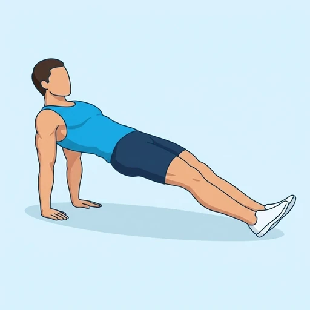

Reverse Plank Dips
Triceps dips from a straight-leg reverse plank: the legs stay extended and the hips high while the elbows bend and straighten.
Upper arms · Bodyweight · Intermediate


Muscles worked by the Reverse Plank Dips
Primary
Secondary
Also called: tricep, triceps, triceps brachii, horseshoe, tris.
Equipment
No equipment — this is a bodyweight exercise.
How to do the Reverse Plank Dips
- Sit with the legs straight and the hands on the floor behind the hips, fingers pointing forward.
- Press into the hands and heels and lift the hips into a straight-leg reverse plank.
- Bend the elbows straight back and lower the hips a short way towards the floor.
- Push back up until the arms lock out, keeping the hips high.
- Repeat for the desired number of repetitions.
Form tips
- Keep the hips lifted at the bottom; sitting down between reps removes the load.
- Keep the elbows tracking straight back rather than flaring outwards.
- Bend the knees if the straight-leg version is too demanding on the hamstrings.
At a glance
| Body part | Upper arms |
|---|---|
| Category | Strength |
| Force type | Push |
| Mechanic | Compound |
| Difficulty | Intermediate |
| Equipment | Bodyweight |
| Goals | Endurance, Strength |
| Tags | Calisthenics |
| MET | 5.0 (metabolic equivalent, for calorie estimates) |
| Unilateral | No |
| Bodyweight | Yes |
| Dataset id | reverse-plank-dips |
Reverse Plank Dips in German & Spanish
| German | Reverse Plank Dips |
|---|---|
| Spanish | Fondos en Plancha Invertida |
Descriptions, instructions and tips ship in all three languages in the JSON.
Related exercises
Exercise data (JSON)
The record below is exactly what exercises.json ships for this exercise — names, descriptions, instructions and tips in English, German and Spanish.
{
"id": "reverse-plank-dips",
"name_en": "Reverse Plank Dips",
"name_de": "Reverse Plank Dips",
"name_es": "Fondos en Plancha Invertida",
"description_en": "Triceps dips from a straight-leg reverse plank: the legs stay extended and the hips high while the elbows bend and straighten.",
"description_de": "Trizeps-Dips aus dem umgekehrten Plank mit gestreckten Beinen: die Beine bleiben lang und die Hüfte hoch, während sich die Ellbogen beugen und strecken.",
"description_es": "Fondos de tríceps desde una plancha invertida con las piernas estiradas: las piernas permanecen largas y las caderas altas mientras los codos se flexionan y estiran.",
"category": "strength",
"force_type": "push",
"mechanic": "compound",
"difficulty": "intermediate",
"body_part": "upper_arms",
"primary_muscles": [
"triceps_brachii"
],
"secondary_muscles": [
"erector_spinae",
"gluteus_maximus",
"posterior_deltoid"
],
"goals": [
"endurance",
"strength"
],
"tags": [
"calisthenics"
],
"variation_group": "plank",
"is_unilateral": false,
"is_bodyweight": true,
"instructions_en": [
"Sit with the legs straight and the hands on the floor behind the hips, fingers pointing forward.",
"Press into the hands and heels and lift the hips into a straight-leg reverse plank.",
"Bend the elbows straight back and lower the hips a short way towards the floor.",
"Push back up until the arms lock out, keeping the hips high.",
"Repeat for the desired number of repetitions."
],
"instructions_de": [
"Setz dich mit gestreckten Beinen hin, die Hände hinter der Hüfte am Boden, die Finger zeigen nach vorn.",
"Druck über Hände und Fersen und heb die Hüfte in einen umgekehrten Plank mit gestreckten Beinen.",
"Beug die Ellbogen gerade nach hinten und senk die Hüfte ein Stück Richtung Boden.",
"Druck dich zurück nach oben, bis die Arme gestreckt sind, die Hüfte bleibt hoch.",
"Wiederhole für die gewünschte Anzahl an Wiederholungen."
],
"instructions_es": [
"Siéntate con las piernas estiradas y las manos en el suelo detrás de las caderas, con los dedos hacia delante.",
"Empuja con manos y talones y eleva las caderas a una plancha invertida con las piernas estiradas.",
"Flexiona los codos hacia atrás y baja un poco las caderas hacia el suelo.",
"Empuja de nuevo hasta bloquear los brazos, manteniendo las caderas altas.",
"Repite las veces indicadas."
],
"tips_en": [
"Keep the hips lifted at the bottom; sitting down between reps removes the load.",
"Keep the elbows tracking straight back rather than flaring outwards.",
"Bend the knees if the straight-leg version is too demanding on the hamstrings."
],
"tips_de": [
"Lass die Hüfte unten angehoben; dich zwischen den Wiederholungen hinzusetzen nimmt die Last raus.",
"Führ die Ellbogen gerade nach hinten, statt sie nach außen ausweichen zu lassen.",
"Beug die Knie, wenn die gestreckte Variante die Beinrückseite überfordert."
],
"tips_es": [
"Mantén las caderas elevadas abajo; sentarte entre repeticiones quita la carga.",
"Lleva los codos rectos hacia atrás en lugar de abrirlos hacia fuera.",
"Flexiona las rodillas si la versión con piernas estiradas exige demasiado a los isquiotibiales."
],
"met": 5.0,
"images": {
"flat": {
"start": "images/flat/reverse-plank-dips-start.webp",
"peak": "images/flat/reverse-plank-dips-peak.webp"
}
}
}Fetch just this exercise
const { exercises } = await fetch(
"https://exercise-dataset.com/exercises.json"
).then(r => r.json());
const ex = exercises.find(e => e.id === "reverse-plank-dips");Free for personal and commercial in-app use with attribution (“Exercise data by RepDB”) — see the license and ready-made attribution snippets. Redistributing the data as a dataset or API is not permitted.